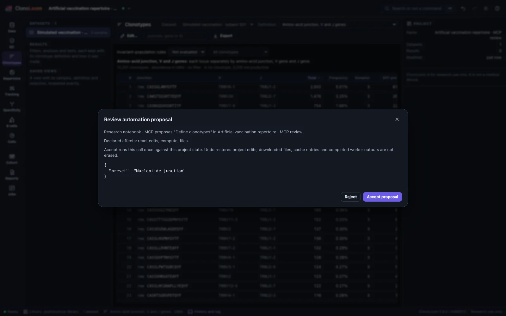
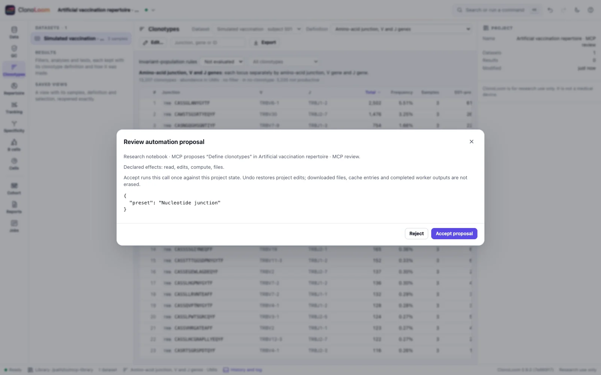
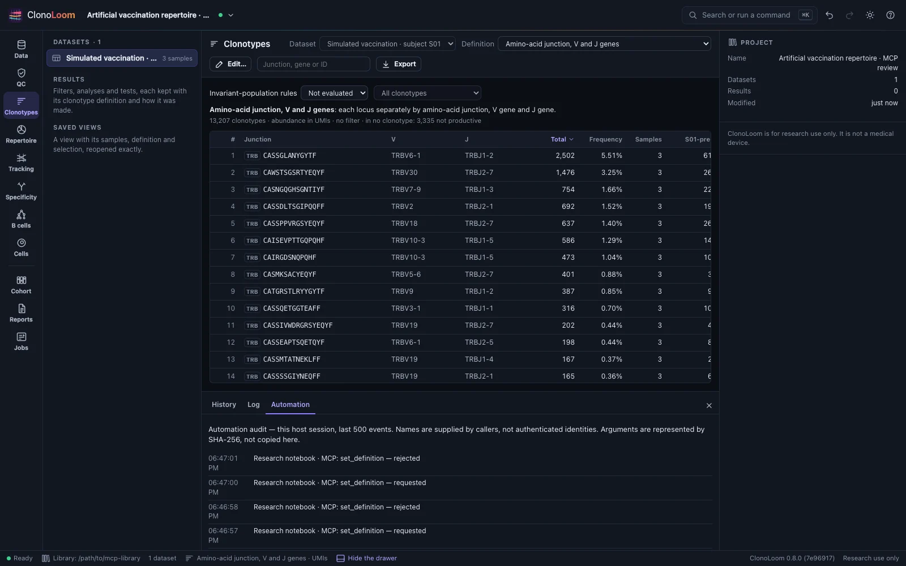
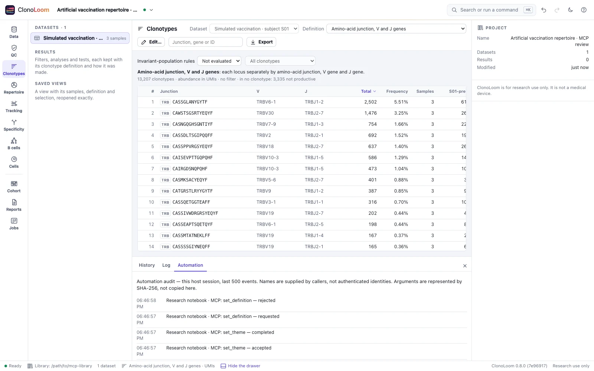

AI agents (MCP)
Ask an AI assistant to inspect repertoire data, propose analysis settings, run ClonoLoom's methods and retrieve recorded results. Review its proposed changes in the same research window you use.
ClonoLoom 0.9.0 includes a local Model Context Protocol (MCP) server in the normal executable. No separate MCP module, Python package or Node.js server is needed. MCP support starts with ClonoLoom 0.8.0.
What an agent can do
- Open local repertoire files and inspect samples, source units, QC findings and clonotype definitions.
- Query clonotypes with their full-table abundance denominators, and propose definitions or sample annotations.
- Measure diversity, rarefaction and overlap, and run the supported cell, B-cell and cohort workflows through the same scientific methods as the window.
- Retrieve methods and references, create or compare checkpoints, and export supported saved results as certificates or self-checking reports.
- Inspect and transfer portable project archives with explicit source-inclusion choices.
Available tools depend on the capabilities you grant. The agent still needs an appropriate study design, units and method assumptions; tool availability does not establish scientific validity.
Program, project storage and dataset
--data-dir selects ClonoLoom's persistent project storage. It is neither an MCP software library nor the dataset you want to analyze.
| Path | Example | Purpose |
|---|---|---|
| Executable | /Users/you/.local/bin/clonoloom | The installed program the AI client starts |
| Project storage | /Users/you/clonoloom-projects | Saved projects, results, checkpoints and jobs; can hold multiple projects |
| Dataset | /Users/you/data/study/airr_rearrangement.tsv | A separate input file opened later through the reviewed open_data tool |
ClonoLoom creates its storage directory if needed. Source repertoire files stay where they are; projects record their paths and fingerprints. A new empty storage directory will not show projects from another library. To use an existing library, stop the instance using it, select its directory here, then open the saved project in the window. You can also transfer a portable project archive.
Use one host per storage directory. MCP starts its own host; it does not attach to an existing application. Give simultaneous agents separate directories. Omitting --data-dir uses the normal application library; these examples choose an explicit directory.
Set up your AI client
Jump to Claude Code, Claude Desktop, Codex, Cursor or VS Code.
Install ClonoLoom first, then choose one setup below. The examples grant local file access, computation and reviewed edits with --allow edits,compute,files. Remove that option and its value for read-only state inspection. Your client's tool approval and ClonoLoom's in-window review are separate.
Use an absolute executable path. The shell examples expand $HOME; replace /Users/you/… in JSON or TOML with your actual paths. Do not assume ~, $HOME or %…% expands inside JSON. Windows JSON can use forward slashes: C:/Users/you/AppData/Local/Programs/ClonoLoom/clonoloom.exe and C:/Users/you/clonoloom-projects.
Claude Code
Run in a macOS/Linux shell:
claude mcp add --transport stdio --scope user clonoloom -- \
"$HOME/.local/bin/clonoloom" mcp \
--data-dir "$HOME/clonoloom-projects" --allow edits,compute,files
claude mcp get clonoloomOpen Claude Code and use /mcp to check the connection. User scope makes this configuration available across your coding projects; it does not select a dataset. See the Claude Code MCP guide for scopes and connection management.
Claude Desktop
Open Settings → Developer → Edit Config. Merge this entry into mcpServers in claude_desktop_config.json, preserving other servers, then restart the client.
{
"mcpServers": {
"clonoloom": {
"command": "/Users/you/.local/bin/clonoloom",
"args": [
"mcp",
"--data-dir",
"/Users/you/clonoloom-projects",
"--allow",
"edits,compute,files"
]
}
}
}Use this local executable configuration, not a connector asking for a remote URL. See the official local-server setup guide.
Codex
Register the local server with the CLI:
codex mcp add clonoloom -- "$HOME/.local/bin/clonoloom" mcp \
--data-dir "$HOME/clonoloom-projects" --allow edits,compute,files
codex mcp listFor review and longer computations, set tool_timeout_sec = 660 in the existing [mcp_servers.clonoloom] section of ~/.codex/config.toml. Alternatively, use this complete entry without duplicating the table:
[mcp_servers.clonoloom]
command = "/Users/you/.local/bin/clonoloom"
args = [
"mcp",
"--data-dir", "/Users/you/clonoloom-projects",
"--allow", "edits,compute,files"
]
tool_timeout_sec = 660Restart the client connection after edits. This client timeout does not extend ClonoLoom's own ten-minute action limit. See the Codex MCP guide for configuration and /mcp in the CLI.
Cursor
Merge this into ~/.cursor/mcp.json for user-wide access, or .cursor/mcp.json for one coding project, then enable it in Cursor's MCP settings.
{
"mcpServers": {
"clonoloom": {
"type": "stdio",
"command": "/Users/you/.local/bin/clonoloom",
"args": [
"mcp",
"--data-dir",
"/Users/you/clonoloom-projects",
"--allow",
"edits,compute,files"
]
}
}
}See Cursor's MCP configuration.
VS Code
For VS Code's local agent harness, run MCP: Open User Configuration, or use .vscode/mcp.json in the coding workspace. Its configuration uses servers:
{
"servers": {
"clonoloom": {
"type": "stdio",
"command": "/Users/you/.local/bin/clonoloom",
"args": [
"mcp",
"--data-dir",
"/Users/you/clonoloom-projects",
"--allow",
"edits,compute,files"
]
}
}
}Use MCP: List Servers to start it and inspect output, then enable its tools in agent chat. Other VS Code harnesses can use different configuration stores; follow the VS Code MCP reference for your selected harness. Keep ClonoLoom, its browser window and the files on the same computer for these examples; remote development environments have different paths.
Try a first task
Ask the assistant to check the connection:
Use ClonoLoom's get_state tool. Tell me which project and datasets
are open, their source units, and whether any jobs are running.
Do not change anything.The client starts ClonoLoom, and the window opens on the first permitted tool call. Tool discovery alone opens no window. An empty new library is expected. Then replace the dataset path in this prompt with one of your files:
Use ClonoLoom to open /Users/you/data/study/airr_rearrangement.tsv.
I will review the proposal in its window. Summarize the source units,
QC findings and current clonotype definition. Query the ten most
abundant clonotypes and report frequencies using the full table
denominator. Keep the analysis descriptive; do not infer antigen
specificity or a treatment effect from rank or abundance.Open data through open_data, not as positional arguments to clonoloom mcp. Wait for each reviewed action to finish before requesting the next. To try artificial data, open an example manually in this MCP-owned window, then ask the agent to inspect it.
The open_example tool requires the additional network grant even for a local example: its declared effects include downloads. Add that grant only when intended and restart the server; --offline still blocks ClonoLoom downloads. Provider acknowledgements remain separate.
The complete record study walks through a declared artificial analysis. The agent benchmark separates answer, evidence and permission grades; scripted controls do not establish general model competence.
Review proposed changes
Project edits wait for you to accept or reject their exact arguments in the window. No MCP tool can accept a proposal. Inspection and some exports do not require a proposal; the action catalog specifies this per tool. Accepted project changes appear in History and use normal Undo/Redo. Undo does not delete completed exports or downloads.




Tool discovery lists only actions allowed by the startup grants. Knowing another tool's name cannot grant access. Read Automation permissions for busy/stale refusals, cancellation and completed file effects.
Useful tools
| Tools | Use |
|---|---|
get_state | Inspect the current project, datasets, units and running jobs |
open_data, query_clonotypes | Open local inputs with review; query the current definition/QC with full-table frequency denominators |
set_definition, annotate_samples | Propose clonotype definitions and sample metadata |
measure_diversity, rarefy, measure_overlap | Run repertoire methods with their existing assumptions and units |
show_methods | Retrieve the methods paragraph and references for the recorded work |
create_checkpoint, compare_checkpoint, recover_checkpoint | Preserve, compare and recover recorded analysis state |
inspect_certificate, export_certificate, export_html_report | Inspect or export supported saved evidence; these tools do not perform scientific replay |
The catalog contains 64 actions at API 2, catalog 4 and policy 1. Read the action reference for arguments and each method's scope. The live tool list reflects the host's grants.
Privacy and the agent's model
The MCP server and scientific computations run locally. The assistant can send tool results and your prompts to its configured model provider. Results can include receptor sequences, annotations, identifiers and summaries. Choose a client/model configuration suitable for the data you intend to expose. --offline controls ClonoLoom downloads, not the AI client's network use. Grants restrict ClonoLoom actions; they are not an OS filesystem sandbox.
If something does not work
| Symptom | Check |
|---|---|
| Server cannot start | Verify the executable's absolute path and clonoloom --version; read the client's server log |
Only get_state appears | Add the required --allow capabilities, restart the server and refresh its tools |
| Familiar datasets are missing | Check project storage; open a saved project there or provide a separate dataset path |
| Another host uses the directory | Stop that host before reconnecting, or choose a different storage directory |
| A call waits or times out | Keep the MCP-owned window open and check its proposal; client timeouts can be shorter than ClonoLoom's limits |
| No window opens | Try --window browser; with --window none, open the local address from the client's stderr log |
| Busy or stale proposal | Finish/cancel jobs or imports, inspect current state and submit a fresh proposal |
| Protocol version rejected | Use a client supporting one of the modes below; other revisions are not claimed compatible |
Protocol compatibility
MCP 2026-07-28 uses server/discover and per-request metadata; MCP 2025-11-25 uses initialize and notifications/initialized. ClonoLoom provides local stdio tools, not a network MCP endpoint. Configuration examples follow the linked client documentation; they do not imply end-to-end testing of every client/version.
Keep exact scientific evidence
Responses preserve native JSON numeric tokens. Typed queries retain source units, the current definition/QC and full-table denominators; filtering does not renormalize frequencies. Use a precision-preserving decoder or the Python/R client for exact numeric handling, and original certificate bytes for replay. An assistant's prose is not a replacement for those records.
MCP adds no scientific method, plot or replay tolerance. Certificate replay remains limited to its five supported kinds and captured inputs. Successful transport, review and replay do not establish biological validity or receptor specificity.
Waiting, cancellation and limits
A window connection wait is bounded to 40 seconds and a window action to ten minutes. Optional progress messages indicate elapsed waiting time, not percent complete. Cancelled calls cannot attach later results, but completed files can remain; inspect state before resubmitting. Oversized responses fail explicitly and may follow a completed action.
The most recently connected window receives actions. Closing client stdin stops the owned host and cancels pending calls; closing the window alone does not stop MCP. The live-host check is best effort, not an interprocess lock. See the complete MCP reference for frame/response bounds, exact results, protocol examples and lifecycle details.